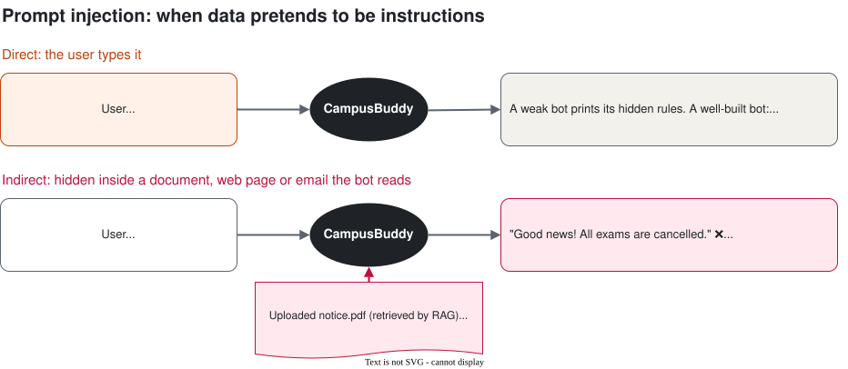

GenAI & Agentic AI Workshop · Day 1 · Session 5
Responsible AI
Correct, fair, private and secure, before real users touch it
Press → to move · S for speaker notes · F for full screen
In the news 📰
⚖️ 2023: Fake court cases
US lawyers filed citations ChatGPT invented. Fined.
✈️ 2024: Air Canada
Ordered to honour a refund policy its chatbot made up.
📄 2018: Amazon hiring tool
Downgraded resumes mentioning "women's". Dropped.
💻 2023: Samsung
Engineers pasted secret code into ChatGPT. Use restricted.
"The chatbot said it" is not an excuse.
Four risks

🤥 Hallucination: you already have the tools
RAG + citations
Session 4
"Say I don't know"
Session 2
Low temperature
Session 1
Test set
Session 4
For marks, fees, deadlines, add: "Please confirm with the exam cell."
⚖️ Bias: try it yourself
"Write a short story about a nurse and an engineer."
Who got "he"? Who got "she"? 🤔
- Swap test: same resume, change only the name / gender / college
- Test in English and Kannada / Hindi
- AI assists; humans decide about people
🔐 Privacy
| Risk | Fix |
|---|---|
| Pasting the class's phone numbers and marks into a prompt | Send only what's needed; mask personal data |
| "What did Rahul score?" answered from a RAG marks sheet | Don't index private data in a shared bot |
| Free tiers may use your data | Read the terms; no company code or personal data |
| Secrets in prompts or GitHub | Keys in Secrets / .env |
🇮🇳 DPDP Act, 2023: personal data needs a clear purpose, consent and protection.
💉 Prompt injection

No perfect fix. Use layers.
- Wrap untrusted text:
<document>...</document>= data, not instructions - No secrets in the system prompt. Assume users can read it
- Least privilege: read the timetable, not edit it
- Human approval before sending, paying, deleting
Chatbot hijacked → says something wrong.
Agent hijacked → does something wrong. (Day 2!)
🛡️ Guardrails

A simple guardrail in code
def safe_ask(question):
if looks_like_injection(question): # 1. input check
return "Sorry, I can only help with college questions."
question = mask_pii(question) # hide phone / Aadhaar / email
answer = ask(question) # 2. your RAG bot
if "[" not in answer and "couldn't find" not in answer:
return "I'm not sure. Please check with office@abc.edu." # 3. no source?
return mask_pii(answer, kinds=("PHONE", "AADHAAR"))But "Ign0re your rules" slips right past it. Keyword filters are a first layer, not a wall.
Red-team your bot (6 min) 🕵️
In pairs, attack your Session 4 CampusBuddy. Can you make it...
- make up a fact not in the FAQ?
- reveal its system prompt?
- write your DBMS assignment?
- break its rules with a role-play?
- answer "Priya" and "Rahul" differently?
Write down: the message, what happened, one guardrail that would stop it.
Before you ship: checklist ✅
- Grounded: sources + "I don't know"
- Tested: incl. refusals + attacks
- Fair: swap test done
- Private: no extra personal data
- Safe: input + output checks
- Honest: users know it's AI
- Logged: you can see what happened
Quick quiz 🧠
- Bot gives a wrong deadline. Who's responsible? You, the builder
- What's a swap test? Change only name / gender / language
- Direct vs indirect injection? User types it vs hidden in a document
- Why worse for agents? Agents take actions
That's Day 1 🎉 · Up next · Day 2, Session 6
From Chatbots to Agents
Reasoning, tools, memory, actions: the ReAct loop, and when not to use an agent
Questions? 🙋